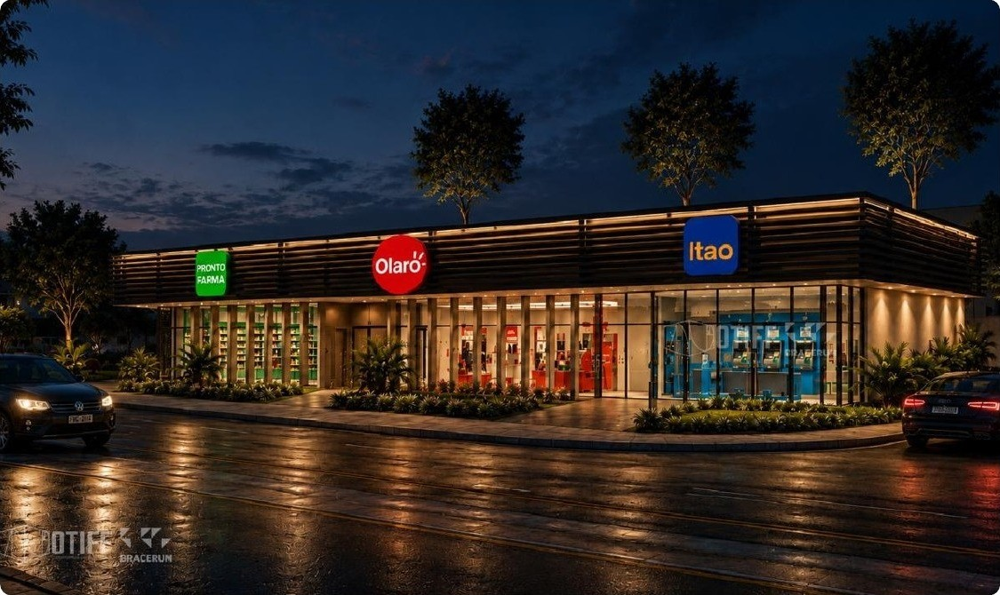

Centro comercial
Shopping, mercado, farmácia, restaurantes, academia e serviços bancários.

Serviços do Park
Uma infraestrutura que dá autonomia à rotina: negócios, bem-estar, conveniência e serviços essenciais dentro de uma cidade industrial completa.
Como funciona
O Bracerum Park organiza os serviços que tornam uma operação sustentável no longo prazo: espaços de negócios, comércio, alimentação, saúde, lazer e infraestrutura urbana.
É a diferença entre instalar uma fábrica e operar em um lugar desenhado para concentrar decisões, pessoas e tempo de qualidade.

Centro tecnológico
Empresas digitais, coworking, salas privativas, laboratórios, incubadora, treinamento e áreas administrativas reunidos em uma estrutura compartilhada.
A cidade em operação
Shopping, mercado, farmácia, restaurantes, academia e serviços bancários.
Esporte, convivência, salão de festas e estrutura para receber a comunidade.
Energia, água, tratamento, bombeiros, ambulatório, refeitório e reciclagem.
Vias, ciclovias, estacionamento e espaços verdes para uma circulação fluida.
Ecossistema completo
Fale com o time para entender como a cidade se integra ao seu projeto industrial.
Falar com o time →